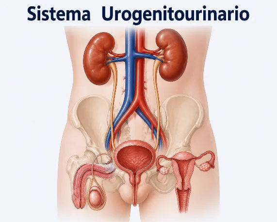
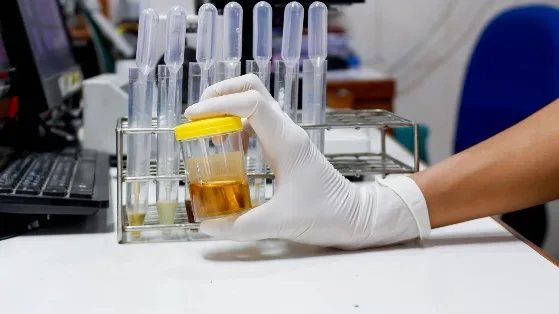
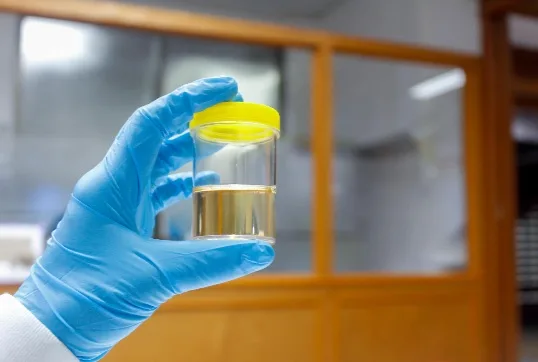

Sistema genitourinario
El sistema genitourinario es el conjunto de órganos que integran el sistema urinario y el sistema reproductor, los cuales trabajan de manera coordinada para mantener el equilibrio interno del organismo, eliminar sustancias de desecho y participar en la reproducción humana.
Componentes del sistema genitourinario
El sistema urinario es el conjunto de órganos encargados de filtrar la sangre, eliminar sustancias de desecho y mantener el equilibrio de agua, sales minerales y otras sustancias del organismo mediante la producción de orina.
Órganos que lo componen
- •Riñones: filtran la sangre y producen la orina.
- •Uréteres: transportan la orina desde los riñones hasta la vejiga.
- •Vejiga: almacena la orina temporalmente.
- •Uretra: permite la expulsión de la orina al exterior.
Urinario superior
Riñones · Uréteres
Urinario inferior
Vejiga · Uretra

Funciones de los riñones
Los riñones son los órganos principales del sistema urinario y realizan funciones vitales:
Regulación de líquidos
Mantienen el equilibrio entre el agua que ingresa y la que se elimina del organismo.
Regulación de electrolitos
Controlan la concentración de sodio (Na⁺), potasio (K⁺), calcio (Ca²⁺) y fósforo (P).
Eliminación de desechos
Eliminan sustancias tóxicas como urea, creatinina y amoníaco.
Producción de hormonas
Eritropoyetina: estimula la formación de glóbulos rojos. Renina: participa en el control de la presión arterial.
Activación de vitamina D
Ayuda a mantener la salud ósea y el metabolismo del calcio.
Formación de la orina
La unidad funcional del riñón es el nefrón. La formación de la orina ocurre mediante tres procesos:
La sangre es filtrada en los glomérulos, permitiendo el paso de agua y sustancias pequeñas. La filtración glomerular estimada (eGFR) determina cómo filtran los riñones y se usa para clasificar la enfermedad renal crónica.
Fuente: Cigna ↗Proceso selectivo en las nefronas que devuelve al torrente sanguíneo componentes útiles filtrados: agua, glucosa y electrolitos, manteniendo la homeostasis de líquidos y solutos.
Fuente: CUN ↗Se eliminan hacia la orina sustancias de desecho y fármacos: hidrógeno (H⁺), potasio (K⁺), amonio (NH4⁺), creatinina y medicamentos como la penicilina.
Fuente: Infermera Virtual ↗Transporte de la orina
La orina es agua, iones y moléculas secretadas que salen del conducto colector de las nefronas y fluyen hacia los uréteres. Cada uréter es un tubo muscular cuyas contracciones impulsan la orina en pequeños chorros hacia la vejiga, donde se almacena antes de ser eliminada.
Nefrón → Tubo colector → Cáliz renal → Pelvis renal → Uréter → Vejiga → Uretra → Exterior
Uroanálisis
El uroanálisis o examen general de orina es uno de los estudios de laboratorio clínico más frecuentes. A través de una muestra de orina ofrece datos sobre padecimientos renales, hepáticos, del sistema urinario y alteraciones metabólicas.
Fuente: Centro Médico ABC ↗- •Detectar infecciones urinarias.
- •Identificar daño renal.
- •Diagnosticar trastornos metabólicos.

Parámetros normales
Aspecto
Transparente.
Densidad urinaria
Normal: 1.005 – 1.030. <1.010: hipostenuria. >1.023: buena concentración.
pH
Normal: 5.5 – 7.0. <5.5: acidosis. >7.0: posible infección bacteriana.
Componentes químicos
Glucosa, proteínas, cetonas, bilirrubina y urobilinógeno: ausentes.
Sedimento urinario
Leucocitos: <5 por campo. Hematíes: hasta 5 por campo.
